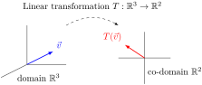
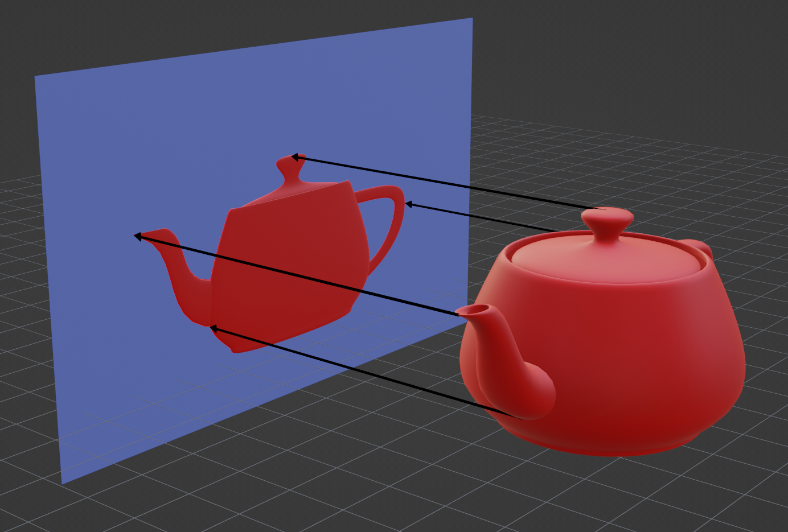

A linear transformation (also called a linear map) is a map between vector spaces that preserves the vector space operations. More precisely, if \(V\) and \(W\) are vector spaces, a map \(T:V\rightarrow W\) is called a linear transformation if
\(T(\vec{v}+\vec{w}) = T(\vec{v})+T(\vec{w})\) for any \(\vec{v},\vec{w} \in V\text{,}\) and
\(T(c\vec{v}) = cT(\vec{v})\) for any \(c \in \IR,\) and \(\vec{v} \in V\text{.}\)
In other words, a map is linear when vector space operations can be applied before or after the transformation without affecting the result.
Definition 3.1.2
Given a linear transformation \(T:V\to W\text{,}\)\(V\) is called the domain of \(T\) and \(W\) is called the co-domain of \(T\text{.}\)
Figure1.A linear transformation with a domain of \(\IR^3\) and a co-domain of \(\IR^2\)
Observation 3.1.3
One example of a linear transformation \(\IR^3\to\IR^2\) is the projection of three-dimesional data onto a two-dimensional screen, as is necessary for computer animiation in film or video games.
Figure2.A projection of a \(3D\) teapot onto a \(2D\) screen
Activity 3.1.1
Let \(T : \IR^3 \rightarrow \IR^2\) be given by
\begin{equation*}
T\left(\left[\begin{array}{c} x \\ y \\ z \end{array}\right] \right)
=
\left[\begin{array}{c} x-z \\ 3y \end{array}\right].
\end{equation*}
Part 1.
Compute the result of adding vectors before a \(T\) transformation:
\begin{equation*}
T\left(
\left[\begin{array}{c} x \\ y \\ z \end{array}\right] +
\left[\begin{array}{c} u \\ v \\ w \end{array}\right]
\right)
=
T\left(
\left[\begin{array}{c} x+u \\ y+v \\ z+w \end{array}\right]
\right)
\end{equation*}
Showing \(T:V\to W\) is not a linear transformation can be done by finding an example for any one of the following.
Show \(T(\vec 0)\not=\vec 0\) (where \(\vec 0\) is the additive identity of \(V\) and \(W\)).
Find specific values for \(\vec v,\vec w\in V\) such that \(T(\vec v+\vec w)\not=T(\vec v)+T(\vec w)\text{.}\)
Find specific values for \(\vec v\in V\) and \(c\in \IR\) such that \(T(c\vec v)\not=cT(\vec v)\text{.}\)
Otherwise, \(T\) can be shown to be linear by proving both of the following in general.
For all \(\vec v,\vec w\in V\text{,}\)\(T(\vec v+\vec w)=T(\vec v)+T(\vec w)\text{.}\)
For all \(\vec v\in V\) and \(c\in \IR\text{,}\)\(T(c\vec v)=cT(\vec v)\text{.}\)
Note the similarities between this process and showing that a subset of a vector space is or is not a subspace (Remark 2.3.4 ).
Activity 3.1.4
Part 1.
Consider the following maps of Euclidean vectors \(P:\mathbb R^3\rightarrow\mathbb R^3\) and \(Q:\mathbb R^3\rightarrow\mathbb R^3\) defined by
\begin{equation*}
P\left( \left[\begin{array}{c} x \\ y \\ z \end{array}\right] \right)=
\left[\begin{array}{c} -2 \, x - 3 \, y - 3 \, z \\ 3 \, x + 4 \, y + 4 \, z \\ 3 \, x + 4 \, y + 5 \, z \end{array}\right]
\hspace{1em} \text{and} \hspace{1em} Q\left( \left[\begin{array}{c} x \\ y \\ z \end{array}\right] \right)=
\left[\begin{array}{c} x - 4 \, y + 9 \, z \\ y - 2 \, z \\ 8 \, y^{2} - 3 \, x z \end{array}\right].
\end{equation*}
Which do you suspect?
\(P\) is linear, but \(Q\) is not.
\(Q\) is linear, but \(P\) is not.
Both maps are linear.
Neither map is linear.
Activity 3.1.4
Part 2.
Consider the following map of Euclidean vectors \(S:\mathbb R^2\rightarrow\mathbb R^2\)
\begin{equation*}
S\left( \left[\begin{array}{c} x \\ y \end{array}\right]\right)= \left[\begin{array}{c} x + 2 \, y \\ 9 \, x y \end{array}\right].
\end{equation*}
Prove that \(S\)is not a linear transformation.
Activity 3.1.4
Part 3.
Consider the following map of Euclidean vectors \(T:\mathbb R^2\rightarrow\mathbb R^2\)
\begin{equation*}
T\left( \left[\begin{array}{c} x \\ y \end{array}\right] \right)= \left[\begin{array}{c} 8 \, x - 6 \, y \\ 6 \, x - 4 \, y \end{array}\right].
\end{equation*}